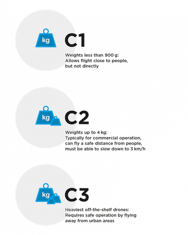
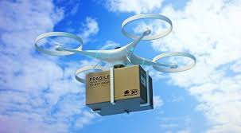
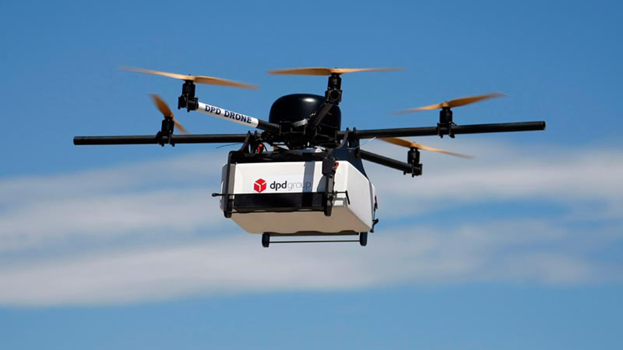
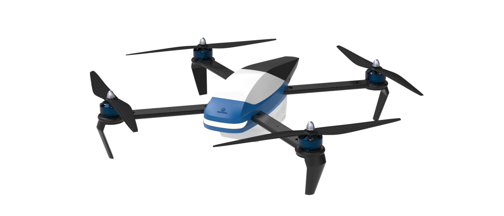

Drones: Our Present and our Future
Drones enable pretty much anyone to obtain visual access to pretty much everywhere. Unless you plan on entering Area 51 territory, drones can be flown as their owner wants them to be since they are cheap and quiet for the most part. Let's take the New York example. Here's what goldbergsegalla.com has to indicate about the NY regulation concerning drones : "A drone must be operated only during the day. A drone must be kept below 500 feet and under 100 miles per hour. A droneoperator must pass a test on aeronautical knowledge. A drone should be operated below 400 feet.". Would that unable your pervy coworker to spy on you sunbathing? I don't think so. Also, different laws apply for different drones. Here's a more general insight regarding the law in NY as to drones : "You have a right to privacy, and that's pretty much it.... New York State has no regulations of its own yet, and states that do mostly reinforce your right to privacy."(taken from www.wgrz.com). Furthermore, according to same sources, the legislation concerning the subject gets tricky as "Local laws, like the drone law imposed by Orchard Park, often end up being reversed because only the FAA can regulate navigable airspace." Here, on the right, are some examples concerning drone restrictions.
Another issue concerns the precision and ability of drones to land on a specific destination in the context of drone delivery (Amazon or any restaurant for example). This also joins the privacy concerns above on top of the delivery system performance questionned by many. To solve these problems, the most probable way of transmitting the delivery will be through a public checkpoint. However, there are other concerns over drone delivery. The vast majority of drone delivery related operations take place in rural areas or oversea, which leads to wonder how well it will do in urban areas, which by nature will be more complicated with the buildings in the way, for example. Furthermore, what about drone delivery crossing states (in the case of the USA) ? Different states have different legislations allowing different uses of drones, which complicates the task even more... 
Among the remaining risks linked to drones, collision is the most feared one nowadays. If a drone crashes into a building, person, or, in the worst scenario, an airplane, who does what consequences may arise, economically and concerning the citizens' safety ? In 2016, a drone was heading at a rapid speed towards France when its owner lost control. Jet fighters were forced to intervene to stop the danger from causing any harm and the owner had to pay a big fine to the Air Force. Another risk is the use of drones for warfare. UCAVs (Unmanned Combat Aerial Vehicules) have plenty of reasons to be used at war. Indeed, they are quieter, less noticeable, smaller, which means less targetable and don't need men inside them, which could save lives. They could however cause the loss of plenty more on the opposite side when used correctly. Of course, there are more problems linked to drones but the ones explained above are the major concerns.
To conclude this page, here's an example of how drones can get very harmful